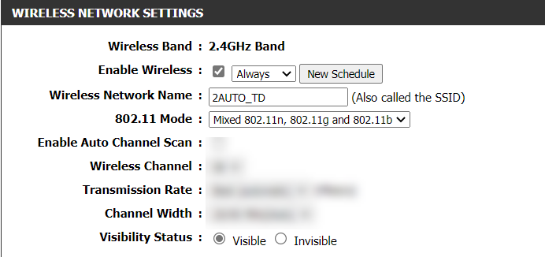
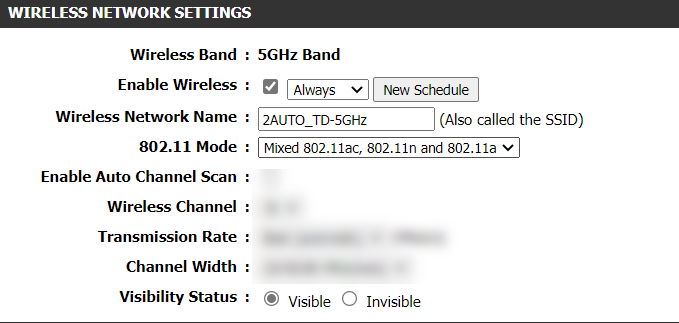

Bij de wireless settings van je router staat op allebei de banden een wireless mode: b, g, n, ac. Dat zijn opeenvolgende generaties van de 802.11-standaard, en elke generatie is sneller en efficiënter dan de vorige. Vergelijk het met de evolutie bij bekabelde netwerken, van 10BASE-T (10 Mbps) naar 100BASE-TX (100 Mbps) naar 1000BASE-T (1 Gbps).
De letters hebben er intussen een tweede naam bij gekregen: n heet ook wifi 4, ac heet wifi 5, en daarna komen ax (wifi 6) en be (wifi 7).
Standaard staat een router niet op één generatie maar op een mixed instelling, zodat ook oudere toestellen nog verbinding krijgen.


Welke generaties je op een band terugvindt, verschilt. De 2,4 GHz-band draagt b, g en n. De 5 GHz-band draagt a, n en ac.
Zolang een oud toestel op b mag aansluiten, moet het netwerk daar rekening mee houden, en dat kost snelheid voor iedereen. De mode bepaalt trouwens ook welke beveiliging je kan kiezen, en dat zie je op de pagina over beveiliging.